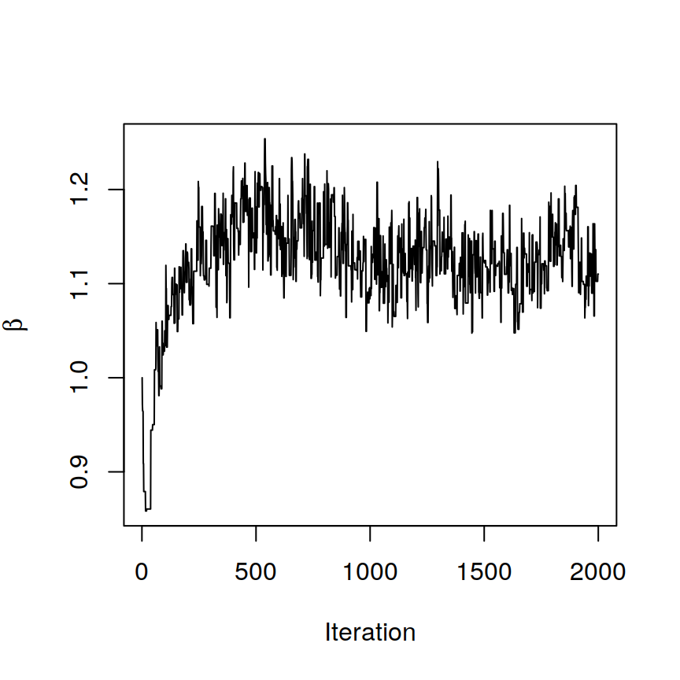
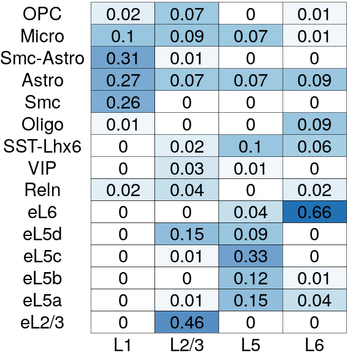
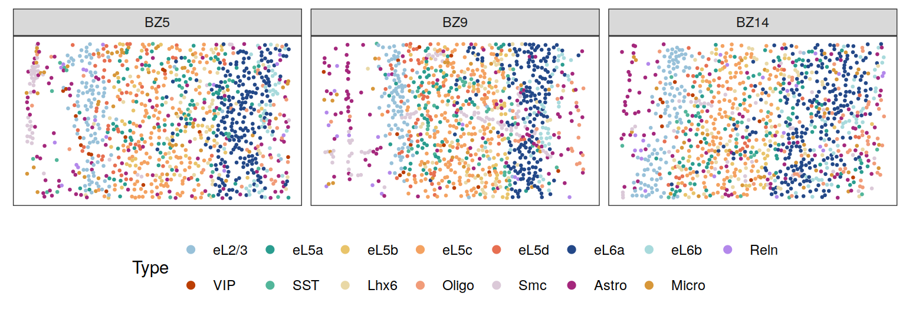
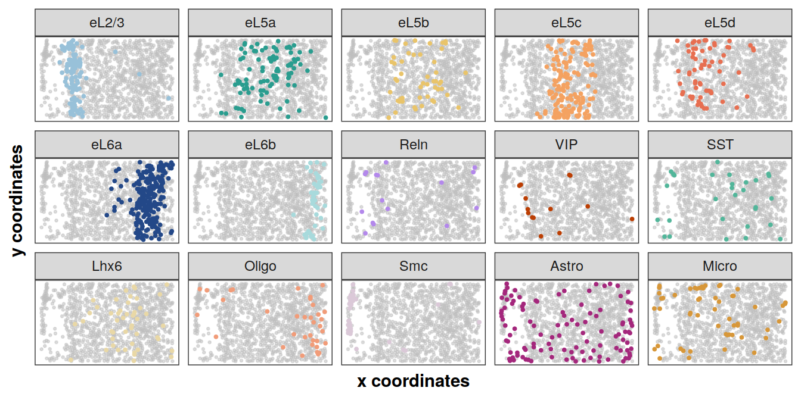
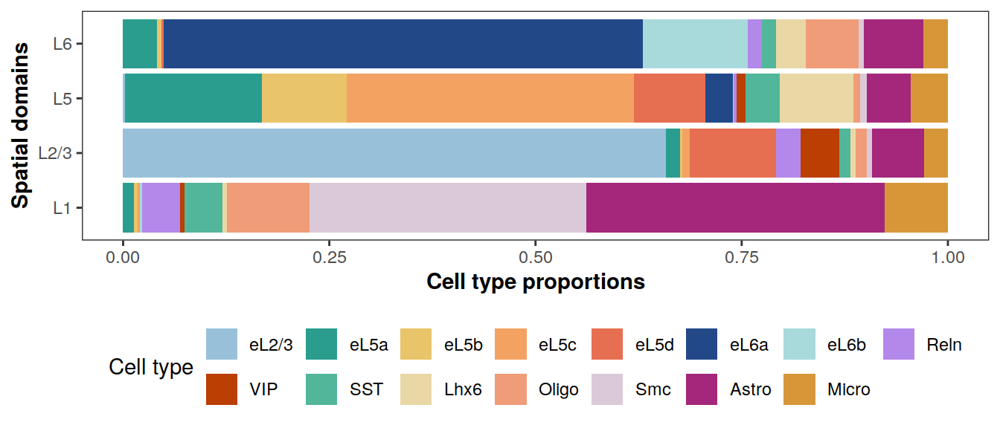

Last updated: 2022-06-12
Checks: 7 0
Knit directory: BASS-analysis/
This reproducible R Markdown analysis was created with workflowr (version 1.7.0). The Checks tab describes the reproducibility checks that were applied when the results were created. The Past versions tab lists the development history.
Great! Since the R Markdown file has been committed to the Git repository, you know the exact version of the code that produced these results.
Great job! The global environment was empty. Objects defined in the global environment can affect the analysis in your R Markdown file in unknown ways. For reproduciblity it’s best to always run the code in an empty environment.
The command set.seed(0) was run prior to running the
code in the R Markdown file. Setting a seed ensures that any results
that rely on randomness, e.g. subsampling or permutations, are
reproducible.
Great job! Recording the operating system, R version, and package versions is critical for reproducibility.
Nice! There were no cached chunks for this analysis, so you can be confident that you successfully produced the results during this run.
Great job! Using relative paths to the files within your workflowr project makes it easier to run your code on other machines.
Great! You are using Git for version control. Tracking code development and connecting the code version to the results is critical for reproducibility.
The results in this page were generated with repository version 829d10c. See the Past versions tab to see a history of the changes made to the R Markdown and HTML files.
Note that you need to be careful to ensure that all relevant files for
the analysis have been committed to Git prior to generating the results
(you can use wflow_publish or
wflow_git_commit). workflowr only checks the R Markdown
file, but you know if there are other scripts or data files that it
depends on. Below is the status of the Git repository when the results
were generated:
working directory clean
Note that any generated files, e.g. HTML, png, CSS, etc., are not included in this status report because it is ok for generated content to have uncommitted changes.
These are the previous versions of the repository in which changes were
made to the R Markdown (analysis/STARmap.Rmd) and HTML
(docs/STARmap.html) files. If you’ve configured a remote
Git repository (see ?wflow_git_remote), click on the
hyperlinks in the table below to view the files as they were in that
past version.
| File | Version | Author | Date | Message |
|---|---|---|---|---|
| Rmd | 829d10c | zhengli09 | 2022-06-12 | Update real data analysis |
| html | 67aecc1 | zhengli09 | 2022-03-05 | Build site. |
| Rmd | 8f34a27 | zhengli09 | 2022-03-05 | Add MERFISH analysis |
| html | 79177d1 | zhengli09 | 2022-02-28 | Build site. |
| Rmd | 9044081 | zhengli09 | 2022-02-27 | Modify links in STARmap.Rmd |
| html | a27dd42 | zhengli09 | 2022-02-27 | Build site. |
| Rmd | ada7b84 | zhengli09 | 2022-02-27 | Modify links |
| html | 9a68511 | zhengli09 | 2022-02-27 | Build site. |
| Rmd | 4ec8df1 | zhengli09 | 2022-02-27 | Publish the introduction, simulation analysis and STARmap analysis |
Here, we apply BASS to analyze the mouse medial prefrontal cortex (mPFC) data by the STARmap spatial transcriptomic technology from Wang et al., 2018. We focus on the tissue sections BZ5, BZ9 and BZ14 that were measured on the mPFC region of different mice. The original data can be downloaded from here. We excluded cells that were annotated to be “NA” class by the original study as they were not confidently identified to be any cell type. Finally, we obtained the same set of 166 genes measured on 1,049 (BZ5), 1,053 (BZ9), and 1,088 (BZ14) cells along with their centroid coordinates for the downstream analysis. We manually annotated the three samples with spatial domain labels, allowing us to quantitatively evaluate different methods with ARI. There, the manual annotation of spatial domains was based on the spatial expression of marker genes and the histology diagram of the mouse brain from the Allen brain atlas. The processed data and manual annotations can be found at the data directory. For detailed usage of all the functions, please refer to the software tutorial section.
library(BASS)
library(Seurat)
library(tidyverse)
# starmap_cnts, starmap_info
load("data/starmap_mpfc.RData")cnts <- starmap_cnts # a list of gene expression count matrices
xys <- lapply(starmap_info, function(info.i){
as.matrix(info.i[, c("x", "y")])
}) # a list of spatial coordinates matrices
cnts[["20180417_BZ5_control"]][1:5,1:5] 69x4486 93x1063 143x3445 88x4092 120x4293
Acss1 0 0 0 0 0
Adcyap1 0 3 0 0 0
Adgrl2 0 0 16 1 7
Aqp4 0 0 8 11 32
Arc 3 3 1 5 0head(xys[["20180417_BZ5_control"]]) x y
69x4486 68.86374 4486.029
93x1063 92.84376 1062.676
143x3445 142.82557 3444.635
88x4092 88.18908 4092.441
120x4293 119.93251 4293.439
104x2648 103.63420 2647.580# hyper-parameters
C <- 15 # number of cell types
R <- 4 # number of spatial domainsset.seed(0)
# Set up BASS object
BASS <- createBASSObject(cnts, xys, C = C, R = R, beta_method = "SW")***************************************
INPUT INFO:
- Number of tissue sections: 3
- Number of cells/spots: 1049 1053 1088
- Number of genes: 166
- Potts interaction parameter estimation method: SW
- Estimate Potts interaction parameter with SW algorithm
To list all hyper-parameters, Type listAllHyper(BASS_object)
***************************************# Data pre-processing:
# 1.Library size normalization followed with a log2 transformation
# 2.Dimension reduction with PCA after standardizing all the genes
# 3.Batch effect adjustment using the Harmony package
BASS <- BASS.preprocess(BASS, doLogNormalize = TRUE,
doPCA = TRUE, scaleFeature = TRUE, nPC = 20)***** Log-normalize gene expression data *****
***** Exclude genes with 0 expression *****
***** Reduce data dimension with PCA *****
***** Correct batch effect with Harmony *****# Run BASS algorithm
BASS <- BASS.run(BASS)# The spatial parameter beta has converged
# after checking the trace plot of beta
plot(1:BASS@burnin, BASS@samples$beta, xlab = "Iteration",
ylab = expression(beta), type = "l")
# Post-process posterior samples:
# 1.Adjust for label switching with the ECR-1 algorithm
# 2.Summarize the posterior samples to obtain the cell type labels, spatial
# domain labels, and the cell type proportion matrix
BASS <- BASS.postprocess(BASS)Post-processing...
doneclabels <- BASS@results$c # cell type clusters
zlabels <- BASS@results$z # spatial domain labels
pi_est <- BASS@results$pi # cell type composition matrix# Perform DE analysis with Seurat
cnts_all <- do.call(cbind, cnts)
seu_obj <- CreateSeuratObject(counts = cnts_all)
seu_obj <- NormalizeData(seu_obj)
seu_obj <- ScaleData(seu_obj, features = rownames(seu_obj))Centering and scaling data matrixseu_obj <- RunPCA(seu_obj, features = rownames(seu_obj), verbose = F)
Idents(seu_obj) <- factor(unlist(clabels))
markers <- FindAllMarkers(seu_obj, only.pos = T,
min.pct = 0, logfc.threshold = 0, verbose = F)
top5 <- markers %>%
group_by(cluster) %>%
top_n(n = 5, wt = avg_logFC)
# By checking the top DE genes of each cell type cluster,
# we annotate specific cell types for each cluster
cTypes <- c(
"eL5d", "Astro", "Micro", "Lhx6", "eL6a",
"eL2/3", "eL5c", "Smc", "eL6b", "eL5b",
"eL5a", "Oligo", "SST", "Reln", "VIP")
clabels <- lapply(clabels, function(clabels.l){
clabels.l <- factor(clabels.l)
levels(clabels.l) <- cTypes
clabels.l <- factor(clabels.l, levels = c(
"eL2/3", "eL5a", "eL5b", "eL5c", "eL5d",
"eL6a", "eL6b", "Reln", "VIP", "SST","Lhx6",
"Oligo", "Smc", "Astro", "Micro"
))
})Top DE genes for each cell type cluster
data.frame(top5) p_val avg_logFC pct.1 pct.2 p_val_adj cluster gene
1 2.876233e-124 2.3092911 0.761 0.114 4.774546e-122 1 Egr2
2 3.139869e-73 1.6184124 0.957 0.389 5.212183e-71 1 Egr4
3 1.971104e-70 1.8823791 0.920 0.341 3.272033e-68 1 Fos
4 4.449469e-44 1.7215121 0.442 0.094 7.386119e-42 1 Npas4
5 6.150811e-38 1.4558075 0.650 0.231 1.021035e-35 1 Bdnf
6 1.378796e-114 2.5568852 0.694 0.195 2.288802e-112 2 Aqp4
7 7.890228e-52 1.4258715 0.825 0.646 1.309778e-49 2 Pcdhgc3
8 4.200450e-18 1.7168932 0.290 0.129 6.972747e-16 2 Rorb
9 1.772491e-09 1.3918680 0.449 0.371 2.942335e-07 2 Igtp
10 1.386255e-07 1.5058103 0.217 0.124 2.301184e-05 2 Hsd11b1
11 1.023927e-65 2.4703129 0.722 0.184 1.699718e-63 3 Flt1
12 1.252955e-49 3.1147874 0.391 0.061 2.079906e-47 3 Lmo2
13 3.286927e-31 2.1828307 0.429 0.111 5.456298e-29 3 Rgs10
14 4.714697e-29 2.5231186 0.338 0.076 7.826398e-27 3 Itgam
15 8.636498e-21 2.2719544 0.353 0.109 1.433659e-18 3 Car4
16 4.790353e-151 2.2967005 0.975 0.186 7.951986e-149 4 Gad2
17 4.834962e-130 2.7611096 0.981 0.261 8.026037e-128 4 Gad1
18 7.633709e-78 2.3072336 0.540 0.087 1.267196e-75 4 Lhx6
19 5.183467e-63 1.8881946 0.925 0.475 8.604555e-61 4 Rbp4
20 1.780421e-19 1.7123612 0.242 0.060 2.955499e-17 4 Pvalb
21 3.279767e-258 2.2253915 0.747 0.123 5.444414e-256 5 Syt6
22 1.232734e-250 1.6530803 0.983 0.486 2.046339e-248 5 Pcp4
23 6.434915e-206 1.6893945 0.878 0.288 1.068196e-203 5 Sla
24 1.525016e-127 1.2304348 0.592 0.146 2.531526e-125 5 Foxp2
25 2.476512e-43 1.3486708 0.171 0.029 4.111010e-41 5 Rprm
26 5.497035e-167 2.3000464 0.832 0.174 9.125078e-165 6 Cux2
27 1.840535e-80 1.3935963 0.771 0.275 3.055289e-78 6 Cpne5
28 5.933843e-78 1.4504471 0.586 0.152 9.850179e-76 6 Synpr
29 1.782050e-74 1.5709955 0.697 0.243 2.958203e-72 6 Nos1
30 3.374784e-59 1.1418423 0.872 0.524 5.602142e-57 6 Nov
31 1.159966e-111 1.3464488 0.487 0.086 1.925543e-109 7 Tpbg
32 2.515657e-91 1.0283563 0.755 0.283 4.175991e-89 7 Fam19a1
33 3.465477e-87 1.2598938 0.641 0.216 5.752691e-85 7 Tcerg1l
34 5.266243e-65 1.0158491 0.626 0.246 8.741963e-63 7 Adcyap1
35 2.928878e-33 1.1546268 0.470 0.216 4.861937e-31 7 Bdnf
36 1.605416e-155 4.8446465 0.803 0.108 2.664991e-153 8 Mgp
37 8.794806e-135 3.4458575 0.921 0.200 1.459938e-132 8 Bgn
38 3.943231e-127 3.6464290 0.605 0.064 6.545764e-125 8 Mylk
39 7.378080e-61 2.0564594 0.678 0.183 1.224761e-58 8 Flt1
40 3.404510e-12 2.2026007 0.243 0.089 5.651486e-10 8 Spp1
41 2.258126e-87 2.7455940 0.948 0.324 3.748489e-85 9 Ctgf
42 1.486451e-47 1.2324767 0.978 0.570 2.467508e-45 9 Pcp4
43 1.249261e-27 1.4360043 0.739 0.357 2.073774e-25 9 Cplx3
44 2.177792e-26 1.1879363 0.627 0.238 3.615135e-24 9 Nr4a2
45 1.253685e-24 1.9400625 0.194 0.028 2.081118e-22 9 Obox3
46 2.271656e-70 2.0298432 0.958 0.451 3.770948e-68 10 Etv1
47 8.568442e-68 2.0243252 0.909 0.336 1.422361e-65 10 Myl4
48 1.695122e-34 1.6233222 0.587 0.197 2.813903e-32 10 Plcxd2
49 2.621470e-20 1.4652994 0.399 0.132 4.351641e-18 10 Tpbg
50 2.127069e-04 1.0230826 0.105 0.041 3.530935e-02 10 Kcnip2
51 2.043359e-91 1.8364825 0.599 0.133 3.391976e-89 11 Sema3e
52 3.206573e-43 1.2351782 0.533 0.190 5.322912e-41 11 Sema3c
53 9.927517e-39 1.5260025 0.358 0.097 1.647968e-36 11 Npy
54 5.188958e-32 0.9891631 0.697 0.371 8.613670e-30 11 Rspo2
55 1.837275e-14 1.1637204 0.161 0.048 3.049877e-12 11 Tacr1
56 2.119861e-92 2.9567126 0.942 0.273 3.518970e-90 12 Enpp2
57 1.827481e-86 3.1145344 0.777 0.163 3.033618e-84 12 Mog
58 1.616774e-06 0.9739285 0.612 0.514 2.683845e-04 12 Sulf2
59 6.307308e-05 1.1828195 0.124 0.046 1.047013e-02 12 Pdgfra
60 1.016140e-03 1.4340611 0.149 0.074 1.686793e-01 12 Pde1c
61 4.873556e-57 3.3759654 0.844 0.285 8.090102e-55 13 Sst
62 1.924884e-11 1.0333617 0.458 0.184 3.195307e-09 13 Synpr
63 1.776572e-04 0.8851463 0.083 0.023 2.949109e-02 13 Qrfpr
64 2.464206e-03 2.4064675 0.271 0.166 4.090583e-01 13 Calb2
65 3.300751e-03 0.4482856 0.083 0.218 5.479247e-01 13 Nptx2
66 1.710980e-150 4.3247819 0.815 0.039 2.840226e-148 14 Pnoc
67 1.866259e-58 3.2149939 0.981 0.212 3.097989e-56 14 Gad2
68 3.593521e-50 2.8830781 1.000 0.285 5.965245e-48 14 Gad1
69 2.549962e-40 3.3930013 0.648 0.107 4.232936e-38 14 Reln
70 1.061489e-21 2.4232361 0.333 0.047 1.762072e-19 14 Ndnf
71 1.941501e-58 5.2381718 0.838 0.097 3.222891e-56 15 Vip
72 7.585684e-33 2.3914599 0.811 0.161 1.259223e-30 15 Calb2
73 5.231229e-23 1.5710322 0.811 0.185 8.683840e-21 15 Synpr
74 9.134001e-16 1.8958560 0.757 0.259 1.516244e-13 15 Penk
75 9.049567e-14 2.3228765 0.514 0.129 1.502228e-11 15 Htr3aYou can refer to visualization for some useful plotting functions or you can write your own code for plotting.
source("code/viz.R")zlabels <- lapply(zlabels, function(zlabels.l){
zlabels.l <- factor(zlabels.l)
levels(zlabels.l) <- c("L6", "L5", "L2/3", "L1")
zlabels.l <- factor(zlabels.l, levels = c("L1", "L2/3", "L5", "L6"))
})
cols <- c("#e07a5f", "#3d405b", "#81b29a", "#f2cc8f")
plotClustersFacet(xys, zlabels, c("BZ5", "BZ9", "BZ14"), size = 0.7) +
scale_color_manual("Domain", values = cols)
| Version | Author | Date |
|---|---|---|
| 9a68511 | zhengli09 | 2022-02-27 |
cols <- c("#98c1d9","#2a9d8f","#e9c46a","#f4a261","#e76f51",
"#234888", "#a8dadc","#b388eb","#bb3e03","#52b69a",
"#e9d8a6", "#f19c79", "#DBC9D8", "#A4277C", "#D79739")
plotClustersFacet(xys, clabels, c("BZ5", "BZ9", "BZ14"), size = 0.5) +
scale_color_manual("Type", values = cols) +
guides(color = guide_legend(byrow = T, nrow = 2,
override.aes = list(size = 2)))
library(gghighlight)
plotCellTypes(xys[[1]], clabels[[1]], cols, ncol = 5, dotsize = 0.7,
size = 0.5, alpha = 0.5)
# adjust order of labeling
pi_est <- pi_est[match(
levels(clabels[[1]]), cTypes),
c(4,3,2,1)]
colnames(pi_est) <- c("L1", "L2/3", "L5", "L6")
rownames(pi_est) <- levels(clabels[[1]])
plotCellTypeCompBar(pi_est, cols, nrow = 2)
sessionInfo()R version 4.2.0 (2022-04-22)
Platform: x86_64-pc-linux-gnu (64-bit)
Running under: Ubuntu 18.04.5 LTS
Matrix products: default
BLAS: /usr/lib/x86_64-linux-gnu/openblas/libblas.so.3
LAPACK: /usr/lib/x86_64-linux-gnu/libopenblasp-r0.2.20.so
locale:
[1] LC_CTYPE=en_US.UTF-8 LC_NUMERIC=C
[3] LC_TIME=en_US.UTF-8 LC_COLLATE=en_US.UTF-8
[5] LC_MONETARY=en_US.UTF-8 LC_MESSAGES=en_US.UTF-8
[7] LC_PAPER=en_US.UTF-8 LC_NAME=C
[9] LC_ADDRESS=C LC_TELEPHONE=C
[11] LC_MEASUREMENT=en_US.UTF-8 LC_IDENTIFICATION=C
attached base packages:
[1] stats graphics grDevices utils datasets methods base
other attached packages:
[1] gghighlight_0.3.2 forcats_0.5.0 stringr_1.4.0 dplyr_1.0.8
[5] purrr_0.3.4 readr_1.3.1 tidyr_1.1.1 tibble_3.1.6
[9] ggplot2_3.3.5 tidyverse_1.3.0 Seurat_3.2.3 BASS_1.1.0
[13] GIGrvg_0.5 workflowr_1.7.0
loaded via a namespace (and not attached):
[1] utf8_1.2.2 reticulate_1.25
[3] tidyselect_1.1.2 htmlwidgets_1.5.1
[5] combinat_0.0-8 grid_4.2.0
[7] BiocParallel_1.22.0 lpSolve_5.6.15
[9] Rtsne_0.16 munsell_0.5.0
[11] codetools_0.2-18 ica_1.0-2
[13] future_1.25.0 miniUI_0.1.1.1
[15] withr_2.4.3 colorspace_2.0-3
[17] Biobase_2.48.0 highr_0.9
[19] knitr_1.37 rstudioapi_0.13
[21] stats4_4.2.0 SingleCellExperiment_1.14.1
[23] ROCR_1.0-11 tensor_1.5
[25] listenv_0.8.0 labeling_0.4.2
[27] MatrixGenerics_1.4.3 git2r_0.28.0
[29] GenomeInfoDbData_1.2.6 harmony_0.1.0
[31] polyclip_1.10-0 farver_2.1.0
[33] rprojroot_2.0.2 parallelly_1.31.1
[35] vctrs_0.3.8 generics_0.1.2
[37] xfun_0.29 R6_2.5.1
[39] GenomeInfoDb_1.24.2 ggbeeswarm_0.6.0
[41] rsvd_1.0.3 bitops_1.0-7
[43] spatstat.utils_2.3-1 DelayedArray_0.18.0
[45] assertthat_0.2.1 promises_1.1.1
[47] scales_1.1.1 beeswarm_0.4.0
[49] gtable_0.3.0 globals_0.15.0
[51] processx_3.5.2 goftest_1.2-3
[53] rlang_1.0.1 splines_4.2.0
[55] lazyeval_0.2.2 broom_0.7.10
[57] yaml_2.3.5 reshape2_1.4.4
[59] abind_1.4-5 modelr_0.1.8
[61] backports_1.2.1 httpuv_1.5.4
[63] tools_4.2.0 ellipsis_0.3.2
[65] jquerylib_0.1.4 RColorBrewer_1.1-2
[67] BiocGenerics_0.38.0 ggridges_0.5.3
[69] Rcpp_1.0.8.3 plyr_1.8.7
[71] sparseMatrixStats_1.8.0 zlibbioc_1.34.0
[73] RCurl_1.98-1.5 ps_1.6.0
[75] rpart_4.1.16 deldir_1.0-6
[77] pbapply_1.5-0 viridis_0.5.1
[79] cowplot_1.1.1 S4Vectors_0.30.2
[81] zoo_1.8-10 SummarizedExperiment_1.22.0
[83] haven_2.3.1 ggrepel_0.9.1
[85] cluster_2.1.3 fs_1.5.2
[87] magrittr_2.0.2 data.table_1.14.2
[89] scattermore_0.8 lmtest_0.9-40
[91] reprex_0.3.0 RANN_2.6.1
[93] whisker_0.4 fitdistrplus_1.1-8
[95] matrixStats_0.61.0 hms_0.5.3
[97] patchwork_1.1.1 mime_0.12
[99] evaluate_0.15 xtable_1.8-4
[101] mclust_5.4.9 readxl_1.3.1
[103] IRanges_2.26.0 gridExtra_2.3
[105] compiler_4.2.0 scater_1.16.2
[107] KernSmooth_2.23-20 crayon_1.5.0
[109] htmltools_0.5.2 mgcv_1.8-40
[111] later_1.1.0.1 lubridate_1.7.9
[113] DBI_1.1.1 dbplyr_1.4.4
[115] MASS_7.3-57 Matrix_1.4-1
[117] cli_3.2.0 parallel_4.2.0
[119] igraph_1.3.1 GenomicRanges_1.44.0
[121] pkgconfig_2.0.3 getPass_0.2-2
[123] plotly_4.9.2.1 xml2_1.3.3
[125] vipor_0.4.5 bslib_0.3.1
[127] XVector_0.32.0 rvest_0.3.6
[129] callr_3.7.0 digest_0.6.29
[131] sctransform_0.3.3 RcppAnnoy_0.0.19
[133] spatstat.data_2.2-0 rmarkdown_2.12.1
[135] cellranger_1.1.0 leiden_0.4.2
[137] uwot_0.1.11 DelayedMatrixStats_1.14.3
[139] shiny_1.5.0 lifecycle_1.0.1
[141] nlme_3.1-157 jsonlite_1.8.0
[143] BiocNeighbors_1.6.0 limma_3.52.0
[145] viridisLite_0.4.0 fansi_1.0.2
[147] pillar_1.7.0 lattice_0.20-45
[149] fastmap_1.1.0 httr_1.4.2
[151] survival_3.3-1 glue_1.6.2
[153] spatstat_1.64-1 label.switching_1.8
[155] png_0.1-7 stringi_1.7.6
[157] sass_0.4.1 blob_1.2.1
[159] BiocSingular_1.4.0 irlba_2.3.3
[161] future.apply_1.9.0